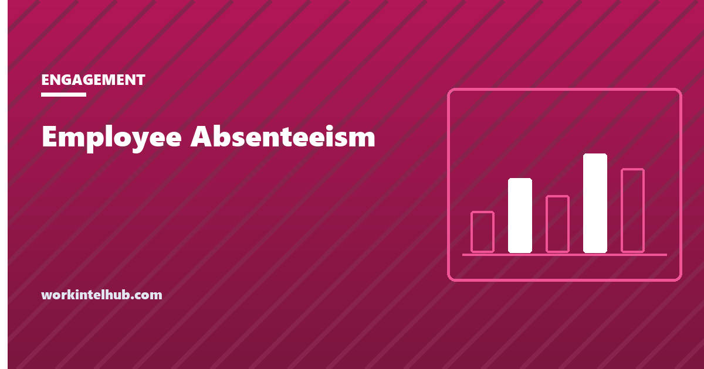

Employee Absenteeism

Employee absenteeism is unplanned absence from scheduled work: sickness, no-shows, emergencies and the late calls that leave a shift short. It is measured as a rate, days lost divided by days available, and it costs more than the wages paid for the missing days, because someone has to cover them or the work waits.
The calculator gives the rate, the annualised days per person and the cost. The rest of the page covers what the rate is compared with, the pattern measures that find the real problem, what causes absence at the level a manager can change, and the legal line between managing attendance and punishing protected leave.
Absenteeism rate and cost calculator
21 for a typical month, 250 for a year
Unplanned absence only: sickness, no-shows, emergencies. Planned leave is not absenteeism. The BLS benchmark line is the 2025 absence rate for full-time workers, which counts people absent in a reference week rather than days lost, so treat it as a rough comparison.
The formula, and the benchmark
Absenteeism rate = (unplanned days absent ÷ days available) × 100, where days available is employees times working days in the period. Forty employees over a 21-day month have 840 available days; 34 lost is 4.05 per cent.
The Bureau of Labor Statistics reports absence for full-time wage and salary workers from the Current Population Survey. For 2025 the absence rate was 3.2 per cent, of which 2.2 points were illness or injury and 1.0 other reasons, and the lost worktime rate was 1.7 per cent. The absence rate counts people who missed any time in the survey week; the lost worktime rate counts hours actually lost, and is the closer comparison for a days-lost calculation. A team running well above 2 per cent of days lost is above the national pattern.
Two cautions. Include only unplanned absence; vacation, approved leave and holidays are not absenteeism and inflate the rate if counted. And a low rate can hide presenteeism, people attending while unwell, which costs more than the absence would have.
The measures that find the problem
The rate says how much. It does not say who or when, and the fixes depend on that.
- Frequency versus duration. Twenty days lost as one employee's four-week illness is a health matter. Twenty days lost as twenty single days across ten people on Mondays is a management matter. Count occurrences separately from days.
- The Bradford factor scores an individual as S² × D, where S is the number of separate absences in a year and D the total days. Ten single days score 1,000; one ten-day absence scores 10. It surfaces frequent short absence, which is the pattern most likely to be avoidable. It is also the measure most likely to punish a chronic condition, so it is a prompt for a conversation, never a trigger for discipline.
- By day of week and by manager. Absence clustered on Mondays and Fridays, or on one manager's team, is information the company rate hides.
- Against engagement and turnover. Rising absence usually precedes rising turnover on the same team by a quarter or two; the turnover rate entry covers the companion measure.
Causes a manager can change
Illness is the largest single cause and mostly not controllable. The controllable causes are the ones that show up in the frequency measures.
| Cause | Pattern it produces | What works |
|---|---|---|
| Burnout and overload | Rising short absences, then a long one | Workload, not attendance policy; see the burnout signals guide |
| A manager people avoid | One team's rate double the others | Address the manager |
| Schedules that ignore availability | No-shows on specific shifts | Collect availability; the availability form |
| No sick pay | Presenteeism, then longer absence | Paid sick leave, which most states now require anyway |
| Caring responsibilities | Predictable days, school holidays | Flexibility where the role allows; leave where it does not |
| Disengagement | Absences that track weekends and pay days | Not a policy problem; see the stay interview |
Where managing absence becomes unlawful
Absence that is protected cannot be counted, scored or disciplined: FMLA leave including intermittent leave, absence that is a disability accommodation, state paid sick leave, jury duty, military leave and the rest. A Bradford score or a points total that includes protected absence is the exhibit in the claim. Our attendance policy template is built with that exclusion, and the attendance tracking guide covers how point systems collide with the ADA and FMLA.
The practical rule: measure absence to understand it, and before acting on any individual figure, ask whether the absence might be protected. The employee who is absent every other Tuesday afternoon may be on intermittent FMLA leave for dialysis.
Key takeaways
- Absenteeism rate is unplanned days absent divided by days available, times 100. Exclude planned leave.
- BLS 2025: 3.2 per cent absence rate and 1.7 per cent lost worktime for full-time workers. Above 2 per cent of days lost is above the national pattern.
- Count occurrences separately from days. Frequent short absence is the avoidable pattern; the Bradford factor surfaces it but must not trigger discipline on its own.
- Cut the rate by day of week and by manager. The company average hides the team with the problem.
- The controllable causes are overload, a bad manager, schedules that ignore availability and no sick pay. Illness itself mostly is not controllable.
- Protected absence cannot be counted or scored. Ask whether an absence might be protected before acting on any individual's figure.
Frequently asked questions
How do you calculate the absenteeism rate?
Divide unplanned days absent by days available, which is the number of employees multiplied by working days in the period, and multiply by 100. Forty employees over 21 working days have 840 available days; 34 lost is a 4.05 per cent rate. Planned leave is excluded.
What is a good absenteeism rate?
The Bureau of Labor Statistics reported a 3.2 per cent absence rate and a 1.7 per cent lost worktime rate for full-time workers in 2025. Days-lost rates under about 2 per cent are in line with the national pattern; rates well above it usually point to a specific team, manager or shift rather than the whole workforce.
What is the Bradford factor?
A score for an individual's absence pattern: the number of separate absences squared, multiplied by total days absent. It weights frequent short absences heavily. It is useful for spotting patterns worth a conversation and dangerous as an automatic disciplinary trigger, because it penalises chronic and protected conditions.
What is the difference between absenteeism and presenteeism?
Absenteeism is not attending scheduled work. Presenteeism is attending while unwell or unable to function, and it often costs more in lost output and spread of illness. A very low absence rate combined with no sick pay usually means presenteeism, not health.
How much does absenteeism cost?
The direct cost is the wages paid or output lost for the absent days, plus the cost of cover, which is often overtime at time and a half or agency staff. The calculator above adds both. Indirect costs, such as overtime fatigue and delayed work, are real but harder to price.
Can an employer discipline an employee for absenteeism?
For unprotected absence under a communicated attendance policy, yes, applied consistently. Absence covered by FMLA, disability accommodation, state sick leave laws, jury duty or military service cannot be counted or disciplined, and the employer should check the reason before acting on any pattern.